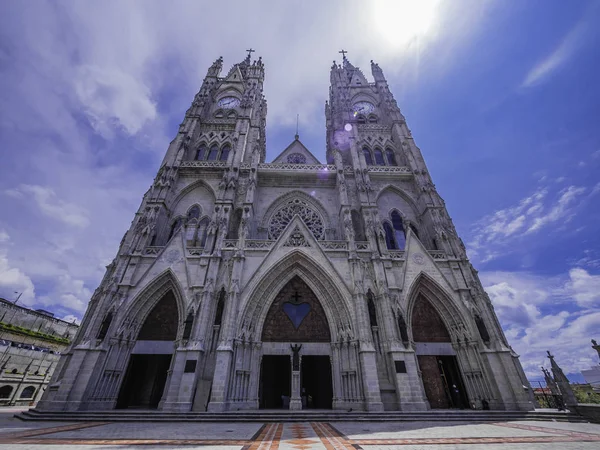
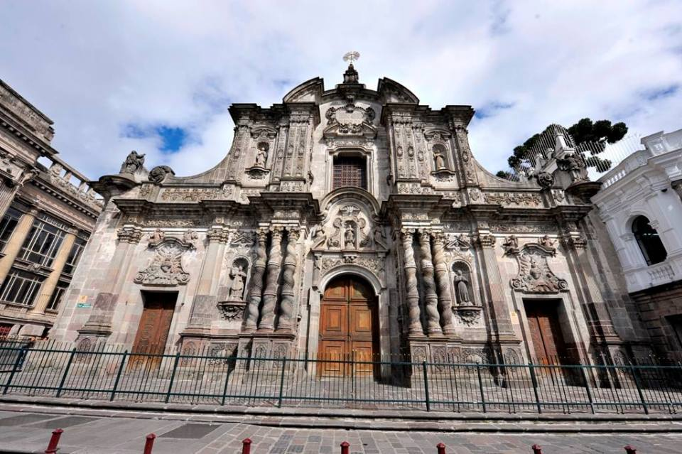
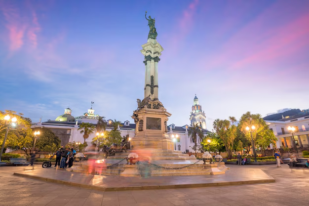
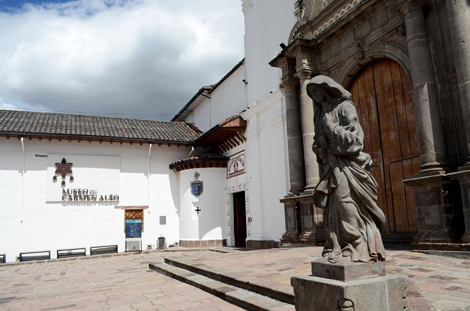
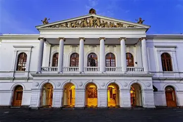
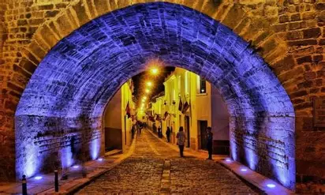

Basílica del Voto Nacional
Imponente obra neogótica con torres que ofrecen vistas panorámicas de Quito.
Ubicación: Centro Histórico
Actividad: Recorrido cultural y mirador.

Imponente obra neogótica con torres que ofrecen vistas panorámicas de Quito.
Ubicación: Centro Histórico
Actividad: Recorrido cultural y mirador.

Considerada la joya barroca de América, con interiores recubiertos en pan de oro.
Ubicación: Calle García Moreno
Actividad: Visita guiada y fotografía.

El corazón político y cultural de Quito, rodeado de edificios históricos.
Ubicación: Centro Histórico
Actividad: Paseo y visita a museos.

Espacio que conserva arte religioso y tradiciones quiteñas.
Ubicación: Calle García Moreno
Actividad: Recorrido cultural.

Principal escenario cultural de Quito, con conciertos y obras teatrales.
Ubicación: Plaza del Teatro
Actividad: Eventos culturales.

Tradicional calle colonial con artesanías, música y gastronomía típica.
Ubicación: Calle Morales
Actividad: Gastronomía y cultura.